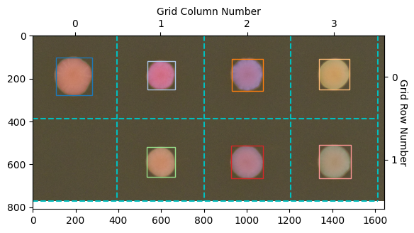
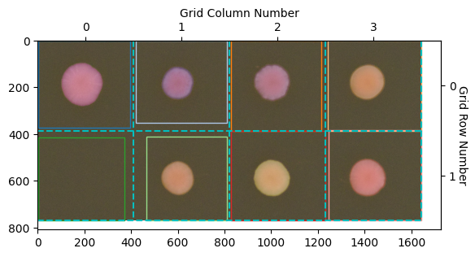
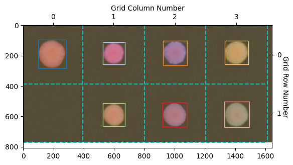
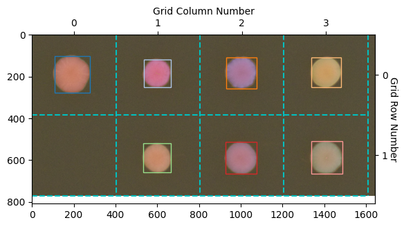
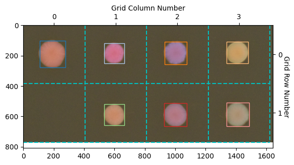

How To: Choose a Detection Algorithm#
PhenoTypic offers multiple detectors, each suited to different plate conditions. This guide compares the most commonly used options on the same plate image so you can pick the right one.
[1]:
from phenotypic.data import load_yeast_plate
from phenotypic.enhance import GaussianBlur, EnhanceLocalContrast
from phenotypic.detect import (
OtsuDetector, TriangleDetector, HysteresisDetector,
WatershedDetector, RoundPeaksDetector,
)
[2]:
def detect_and_count(detector):
"""Apply enhancement + detector to a fresh plate, return (result, count)."""
plate = load_yeast_plate()
plate = GaussianBlur(sigma=2.0).apply(plate)
plate = EnhanceLocalContrast(clip_limit=0.01).apply(plate)
plate = detector.apply(plate)
return plate, plate.num_objects
OtsuDetector#
Global threshold, fast. Best for clean plates with uniform illumination and bimodal histograms.
[3]:
result, count = detect_and_count(OtsuDetector())
print(f"OtsuDetector: {count} colonies")
result.show(overlay=True)
OtsuDetector: 7 colonies
[3]:
(<Figure size 640x480 with 1 Axes>, <Axes: >)

TriangleDetector#
Better than Otsu when one peak dominates — e.g., few colonies on a large plate.
[4]:
result, count = detect_and_count(TriangleDetector())
print(f"TriangleDetector: {count} colonies")
result.show(overlay=True)
TriangleDetector: 151 colonies
[4]:
(<Figure size 640x480 with 1 Axes>, <Axes: >)

HysteresisDetector#
Uses two thresholds (low and high) to capture colonies with soft edges. Pixels above high are colony; pixels between low and high are colony only if connected to a high-confidence pixel.
[5]:
result, count = detect_and_count(HysteresisDetector(low="mean", high="otsu"))
print(f"HysteresisDetector: {count} colonies")
result.show(overlay=True)
HysteresisDetector: 7 colonies
[5]:
(<Figure size 640x480 with 1 Axes>, <Axes: >)

WatershedDetector#
Region-growing approach that separates touching colonies. Best for dense plates where colonies overlap.
[6]:
result, count = detect_and_count(WatershedDetector())
print(f"WatershedDetector: {count} colonies")
result.show(overlay=True)
WatershedDetector: 7 colonies
[6]:
(<Figure size 640x480 with 1 Axes>, <Axes: >)

RoundPeaksDetector#
Peak-finding approach optimized for round colonies in grid plates. Fast and accurate when colonies are circular and well-spaced.
[7]:
result, count = detect_and_count(RoundPeaksDetector())
print(f"RoundPeaksDetector: {count} colonies")
result.show(overlay=True)
RoundPeaksDetector: 7 colonies
[7]:
(<Figure size 640x480 with 1 Axes>, <Axes: >)

Comparison Summary#
Detector |
Best for |
Speed |
|---|---|---|
|
Clean plates, bimodal histograms |
Fast |
|
Few colonies on large plates |
Fast |
|
Soft-edged or faint colonies |
Fast |
|
Touching/clustered colonies |
Moderate |
|
Round colonies in grid plates |
Fast |